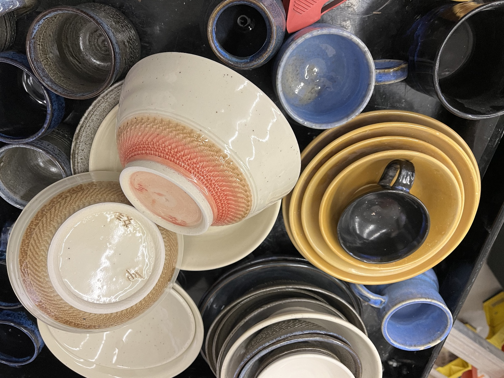
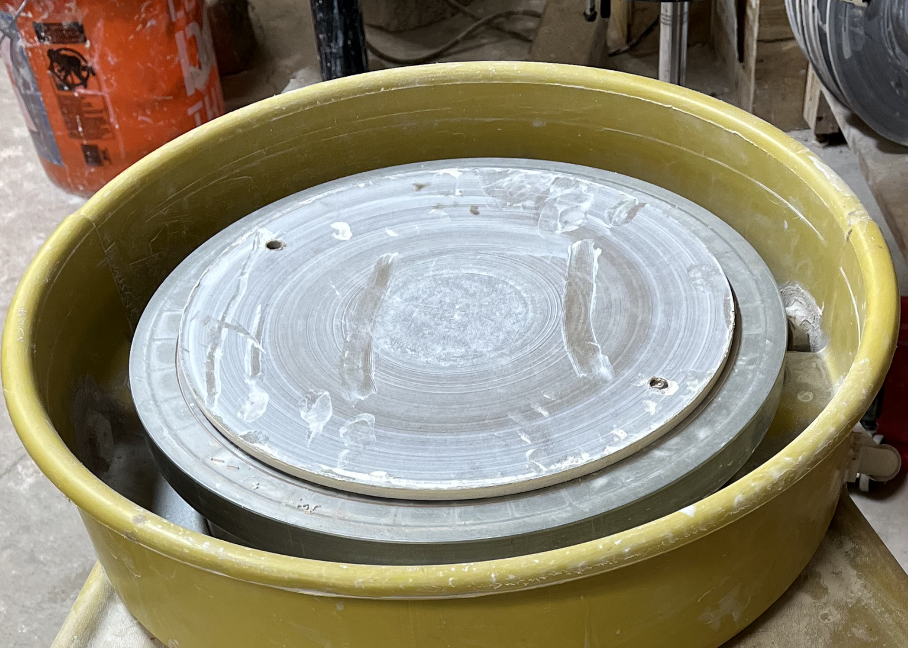

Welcome To Patterson Pots!
This is the humble home of a well crafted pottery gallery that you can observe, admire, and if you so desire, purchase. Thank you so much for coming to see these works on this site, and we hope you come back! Take a look at our gallery or if you're interested you can read more about the creator of these pots on the biography page.

Hand Crafted Pottery
Ken makes all different kinds of pottery including:
Mugs, Bowls, Vases, Cups, Ornaments, Jars and more.

Hand Crafted Pottery
Ken makes all different kinds of pottery including:
Mugs, Bowls, Vases, Cups, Ornaments, Jars and more.